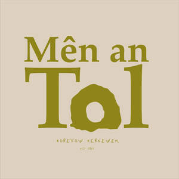
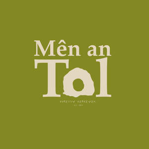

Trade Mark Journal No.2025/019 9 May 2025
UK00004180702 28 March 2025 (21,25,32,33,35,43)
Mark 1

Mark 2

- Class 21
- Glassware; drinking vessels; beer glasses; pint glasses; tankards; beer mugs; tumblers; shot glasses; growlers; beer jugs; reusable bottles; beverage storage vessels and containers; bottle openers; corkscrews; non-paper coasters; serving trays; coolers (ice buckets); insulated beverage containers; kitchen utensils; household utensils and containers for kitchen and bar use; porcelain and earthenware mugs.
- Class 25
- Clothing; ready-to-wear clothing; casual wear; leisurewear; outerwear; knitwear; shirts; T-shirts; polo shirts; sweatshirts; hoodies; jackets; coats; vests; trousers; jeans; shorts; skirts; dresses; socks; scarves; gloves; belts (clothing); footwear; shoes; boots; sandals; trainers; slippers; headgear including hats, caps, baseball caps, beanies, visors, berets, bandanas.
- Class 32
- Beers; craft beers; ales; lagers; stouts; porters; non-alcoholic beers; low-alcohol beers; beer-based beverages; mineral waters; aerated waters; carbonated soft drinks; fruit-flavoured beverages; fruit juices; syrups and preparations for making beverages.
- Class 33
- Alcoholic beverages, except beers; distilled spirits; liqueurs; gin; whisky; rum; vodka; brandy; alcoholic cocktails; wine; cider; perry; hard seltzers; fortified wines.
- Class 35
- Retail services, wholesale services, online retail store services, and mail-order retail services connected with beers, alcoholic and non-alcoholic beverages, clothing, footwear, headgear, glassware, barware, household and kitchen utensils; business management and business administration services related to the operation of breweries, bars, restaurants, and retail outlets; advertising, marketing, and promotional services related to beverages and brewery merchandise.
- Class 43
- Services for providing food and drink; bar and pub services; taproom services; restaurant and café services; catering services; provision of food and beverages within brewery premises; rental of temporary event space and hospitality facilities.
Allied Acquisitions Limited
EZ PZ Brew Co Ltd.
PTW Inns Ltd
Raising Humans Kind Ltd